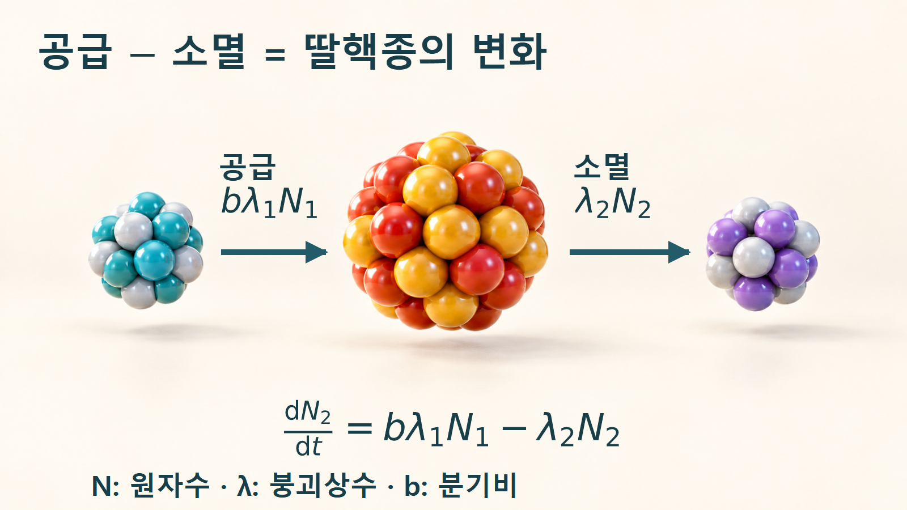
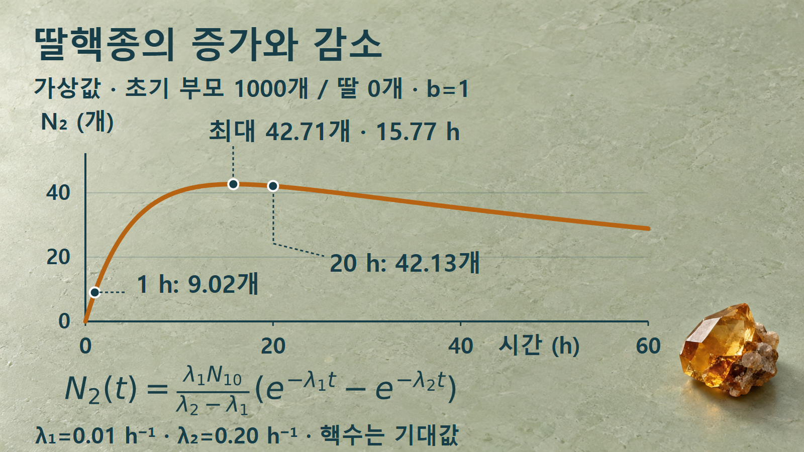
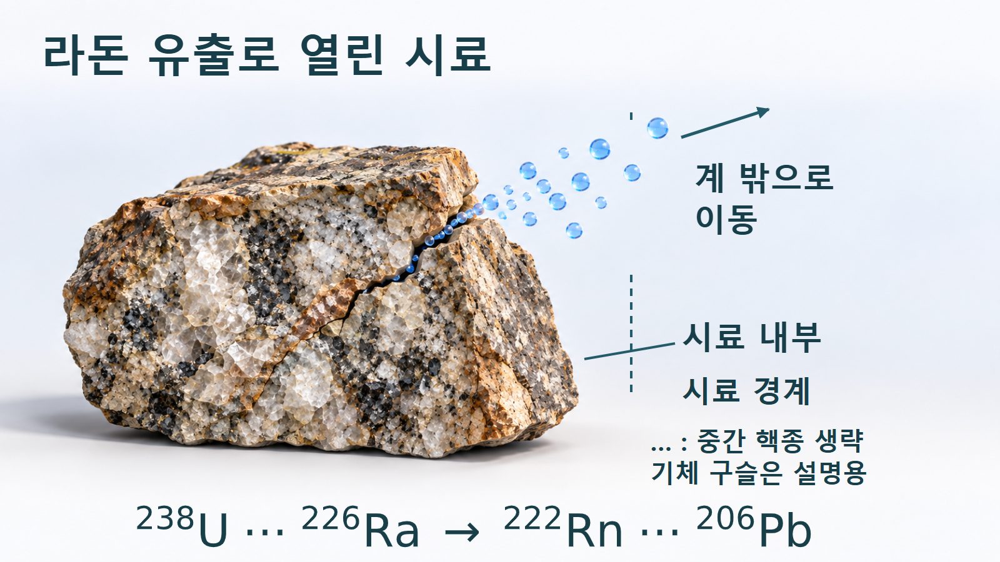

방사성붕괴와 시간 · 056
연속 붕괴사슬
부모가 줄어드는데도 딸핵종이 늘어나는 이유
딸핵종은 부모의 붕괴로 생기지만, 만들어진 뒤에도 계속 남아 있는 것은 아닙니다. 두 속도의 경쟁을 식으로 세우고 1시간과 20시간을 계산하면, 같은 사슬 안에서 증가와 감소가 이어지는 이유를 이해할 수 있습니다.
딸핵종이 계속 쌓이지 않는 이유
방사성 모핵종이 붕괴해 만든 딸핵종도 불안정하다면, 그 딸핵종은 다시 다른 핵종으로 변합니다. 이처럼 생성물이 다음 붕괴의 출발점이 되는 연결을 연속 붕괴사슬이라고 합니다. 한 세대만 보면 핵종이 사라지지만, 전체 사슬에서는 앞 세대의 감소가 뒤 세대의 공급으로 이어집니다.
따라서 부모가 지금까지 잃은 원자수를 모두 더한다고 현재의 딸핵종 수가 되지는 않습니다. 그동안 만들어진 딸핵종 중 일부는 이미 다음 세대로 넘어갔기 때문입니다. 모핵종과 딸핵종의 시간 변화를 함께 풀어야 한다는 점이 단일 지수감소와의 차이입니다. [1]
이 글에서는 두 방사성 핵종이 연결된 구간을 먼저 계산합니다. N₁은 부모의 원자수, N₂는 딸의 원자수이며, λ₁과 λ₂는 각각의 붕괴상수입니다. 한 핵의 수명을 예언하는 식이 아니라 많은 핵으로 이루어진 집단의 평균적인 변화를 다루므로 계산된 핵수는 소수로 나올 수 있습니다.
공급과 소멸의 수지식
부모 하나가 관심 딸핵종을 만드는 분기비를 b라고 하면, 단위 시간에 새로 생기는 딸핵종 수는 bλ₁N₁입니다. 이미 존재하는 딸핵종이 같은 시간 동안 붕괴하는 수는 λ₂N₂입니다. 두 항 모두 핵수의 변화 속도이므로 같은 시간 단위를 써야 합니다.
딸핵종의 변화율은 부모가 공급하는 속도에서 딸핵종이 붕괴하는 속도를 뺀 값입니다.

외부 유출입이 없고 붕괴상수가 일정한 계에서, 처음 부모가 N₁₀개이고 딸이 없다고 둡니다. 부모는 N₁(t)=N₁₀e−λ₁t로 줄어듭니다. 서로 다른 두 붕괴상수에 대한 딸핵종의 해는 다음과 같습니다. b=1인 기본 사슬 해의 공급항에 관심 분기비를 반영했습니다. [1]
대괄호 안의 두 지수항은 단순히 부모와 딸의 양을 빼는 값이 아닙니다. 시간마다 달라지는 부모의 공급과, 각 시점에 생긴 딸의 후속 붕괴를 모두 합한 결과입니다. 초기 딸핵종이 있었다면 그 초기량이 스스로 감소하는 항도 더해야 합니다.
1시간과 20시간의 서로 다른 상태
실제 핵종의 측정값과 구분하기 위해 가상 조건을 사용합니다. λ₁=0.01 h−1, λ₂=0.20 h−1, N₁₀=1,000개, N₂(0)=0, b=1로 둡니다. 딸의 붕괴상수가 더 크므로 만들어진 딸은 부모보다 빠른 시간척도로 붕괴합니다. 아래 계산에서는 t를 시간 단위로 넣습니다.
예시 1 — 1시간 뒤입니다. 부모는 1,000×e−0.01≈990.05개입니다. 딸은 (10/0.19)×(e−0.01−e−0.20)≈9.02개입니다. 부모가 약 9.95개 줄었는데 딸이 약 9.02개만 남는 차이가 바로 그동안의 후속 붕괴를 보여줍니다. 초기 딸 0이라는 조건에서도 생성 직후부터 딸의 소멸이 함께 진행됩니다.
예시 2 — 20시간 뒤입니다. 부모는 약 818.73개, 딸은 약 42.13개입니다. 이 시각의 공급률은 0.01×818.73≈8.19개/h, 소멸률은 0.20×42.13≈8.43개/h입니다. 소멸이 공급보다 조금 더 크므로 딸의 수는 더 이상 늘지 않습니다.
같은 조건에서 20시간 뒤의 딸핵종 수는 약 42.13개이지만, 이때는 이미 감소하고 있습니다.

증가에서 감소로 바뀌는 정점은 ln(λ₂/λ₁)/(λ₂−λ₁)≈15.77시간이며, 그때의 딸핵종 수는 약 42.71개입니다. 정점에서는 공급률과 소멸률이 같아 순간 변화율이 0이 됩니다. 그 뒤에도 공급은 계속되지만 더 큰 소멸을 따라가지 못합니다. 순간적인 최대점과 충분히 긴 시간의 방사평형은 같은 개념이 아닙니다.
방사능으로 바꿀 때에는 단위를 한 번 더 확인합니다. 20시간 시점의 λ₂N₂≈8.43은 시간당 붕괴수입니다. 베크렐은 초당 붕괴수이므로 3,600으로 나누어 약 0.00234 Bq가 됩니다. 그래프의 세로축은 원자수이며 이 방사능 값과 같은 축으로 읽지 않습니다.
암석에서 라돈이 빠져나갈 때
자연계의 우라늄-238 계열은 여러 중간 핵종을 거쳐 안정한 납-206에 도달합니다. 그 안에 포함된 라돈은 기체이므로 암석과 토양의 틈을 통해 이동할 수 있습니다. 핵종의 붕괴와 시료 경계를 넘는 이동은 서로 다른 변화입니다. [2] [3]
라돈이 시료 밖으로 빠져나가면 그 뒤의 딸핵종 신호도 닫힌 계의 계산에서 벗어날 수 있습니다.

예를 들어 암석 내부를 측정하는데 생성된 라돈 일부가 빠져나갔다면, 그 라돈이 나중에 만드는 딸핵종도 모두 원래 암석에 남아 있지는 않습니다. 반대로 외부 라돈이나 딸핵종이 들어오는 시료도 생각할 수 있습니다. 이런 경우에는 붕괴상수만 조정할 것이 아니라 유입·유출 항을 수지식에 따로 더해야 합니다.
이 그림은 계열 전체를 직접 연결된 몇 번의 전이로 축약한 것이 아닙니다. 줄임표는 중간 핵종이 생략되었음을 뜻하며, 구슬의 크기와 색은 눈에 보이지 않는 라돈의 이동을 설명하는 비유입니다. 실제 방사선 측정영상이나 원자의 공간 궤적을 재현하지 않습니다.
계산을 적용하기 전의 조건
위 시간해에는 닫힌 계, 일정한 붕괴상수, 초기 딸핵종 0, 지정한 분기비라는 조건이 들어 있습니다. 화학분리로 딸만 제거하거나 일부 물질이 빠져나가면 그 시점의 부모와 딸을 새 초기조건으로 놓아야 합니다. 부모의 시간까지 처음으로 되돌리는 것은 아닙니다.
λ₁=λ₂인 경우에는 분모에 0을 대입하지 않고 같은 붕괴상수에 대한 별도의 극한해를 사용합니다. 여러 분기를 갖는 긴 사슬도 두 핵종 식 하나로 전부 대표하지 않습니다. 각 핵종으로 들어오는 경로와 나가는 경로를 먼저 정리해야 합니다. [1]
검출기가 기록한 특정 감마선의 계수율도 곧바로 시료 전체의 방사능은 아닙니다. 어떤 핵종의 어떤 방출을 관찰하는지, 측정 효율과 시료 이동 조건이 무엇인지가 해석에 추가됩니다. 이 글의 가상 계산은 사슬의 수지를 익히기 위한 예시이며 실제 시료의 성분이나 계수율을 결정하지 않습니다.
시료 조건과 계산의 대응
| 시료 상태 | 계산에 필요한 조건 | 해석의 초점 |
|---|---|---|
| 닫힌 두 핵종 사슬 | 붕괴상수·분기비·초기 핵수 | 공급과 소멸의 차이 |
| 라돈이 빠져나가는 암석 | 시료 경계와 유출 항 | 후속 딸핵종이 남는 위치 |
| 딸핵종을 분리한 시료 | 분리 직후 부모와 딸의 잔존량 | 새 초기조건에서의 재성장 |
연속 붕괴사슬을 읽을 때에는 핵종 이름의 순서보다 각 세대의 수지를 먼저 확인합니다. 어떤 경로로 공급되는지, 얼마나 빠르게 스스로 붕괴하는지, 시료 밖으로 이동하는지를 구분하면 증가·정점·감소를 하나의 원리로 설명할 수 있습니다. 현재의 핵수와 방사능도 마지막에 단위를 확인해 연결합니다.